Page thème
T1 : plus aucun glissement horizontal (largeur de page = largeur d’écran). T2 : « Abonnés » au lieu de « FOLLOWERS ». « Communauté » n’est plus répété.

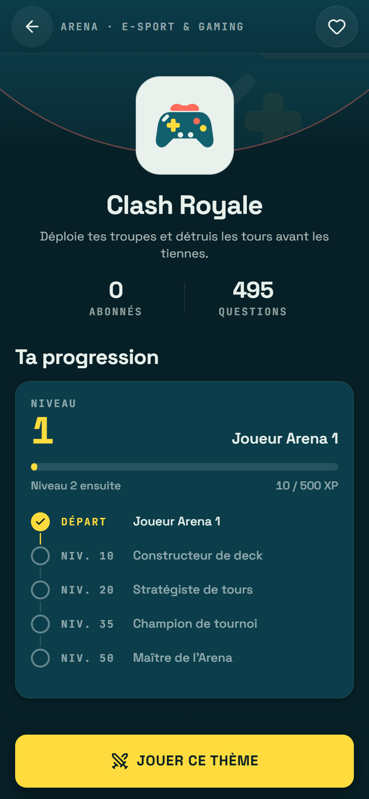
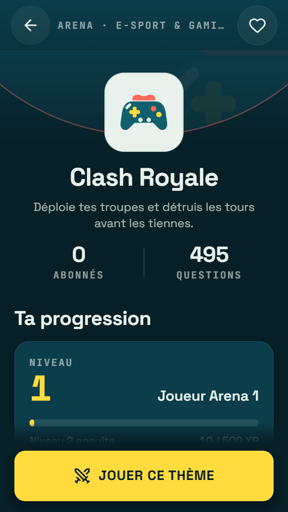
Mini V1.2 : uniquement les 6 corrections prioritaires (P1) et les P2 recommandés par la revue Better Design. Aucune nouvelle couleur, aucun nouveau composant, aucune animation ajoutée. Captures 390×844 et 320×568.
T1 : plus aucun glissement horizontal (largeur de page = largeur d’écran). T2 : « Abonnés » au lieu de « FOLLOWERS ». « Communauté » n’est plus répété.


Q1 : la question est centrée dans l’espace libre. Pseudo du rival en corail lisible (4,69:1). Réponses grisées plus lisibles après révélation (5,06:1).
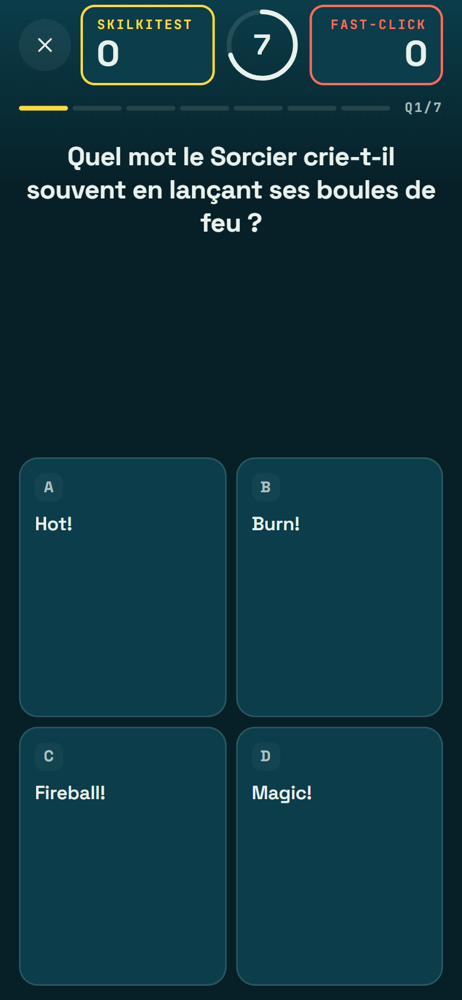
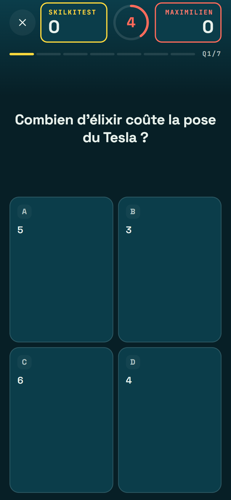
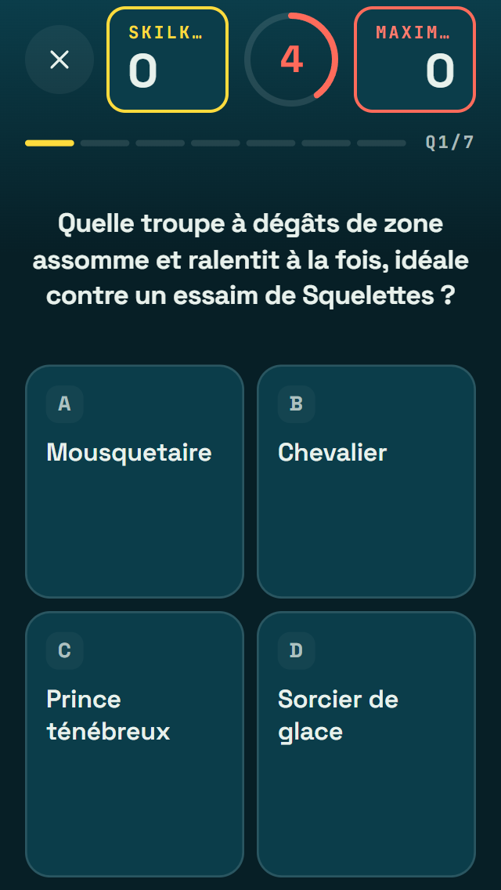
V1 : plus d’épingle fantôme sous « vs ». « Adversaire localisé » en corail lisible, sans changer de rôle de couleur.

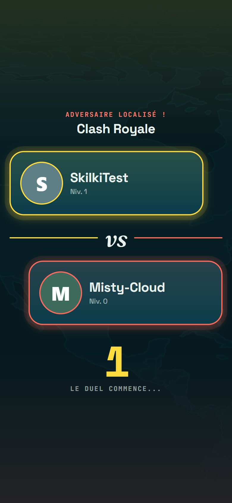
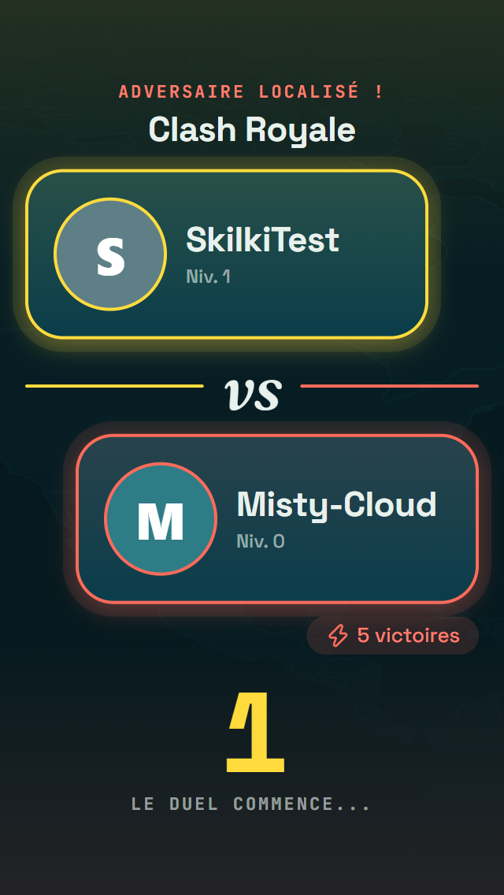
Titre « Explore les thèmes ». E1 : chaque univers montre ses 2 premières sous-catégories pour qu’on comprenne ce qu’il contient.

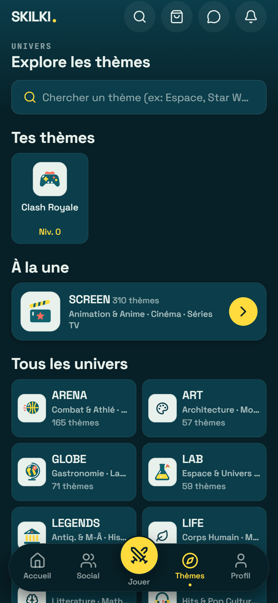
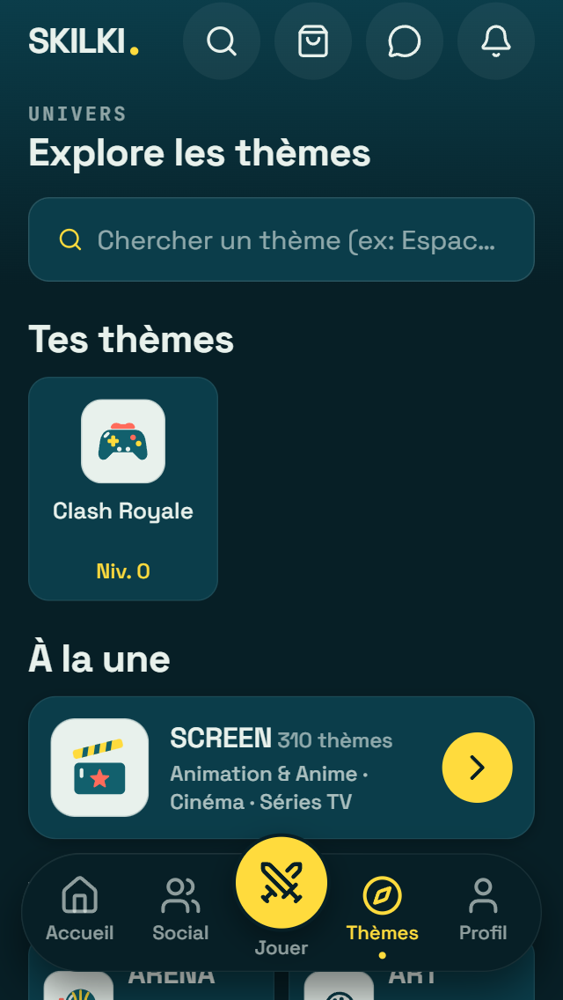
« 1 jour de série » au singulier, carte progression aux écarts réguliers, 8 px entre les boutons d’en-tête, puces à 44 px de zone tactile.

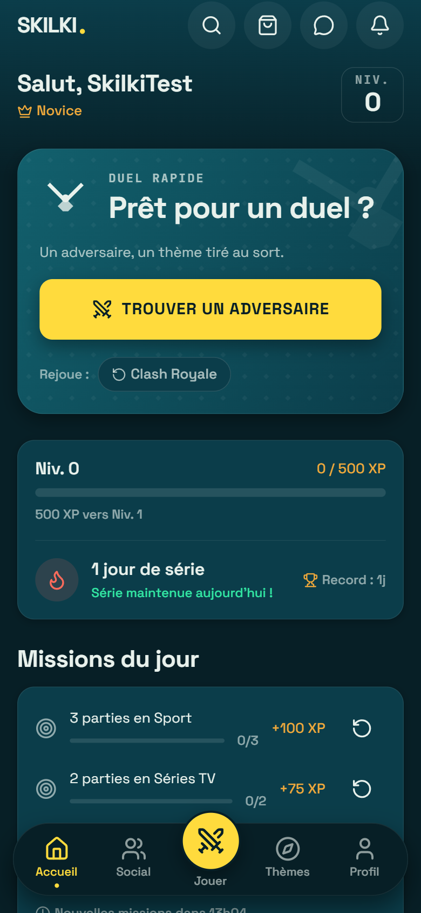
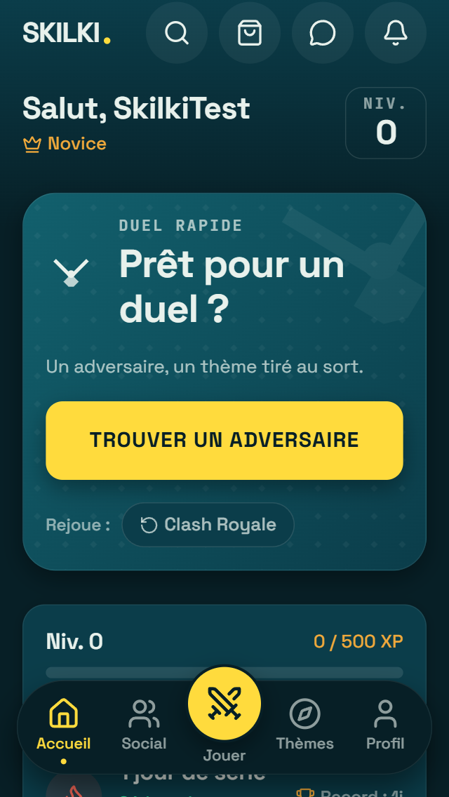
P1 : « Points de classement » remplace « MMR ». Un seul écart de 12 px entre rang et niveau.

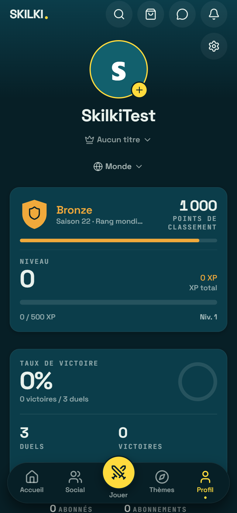
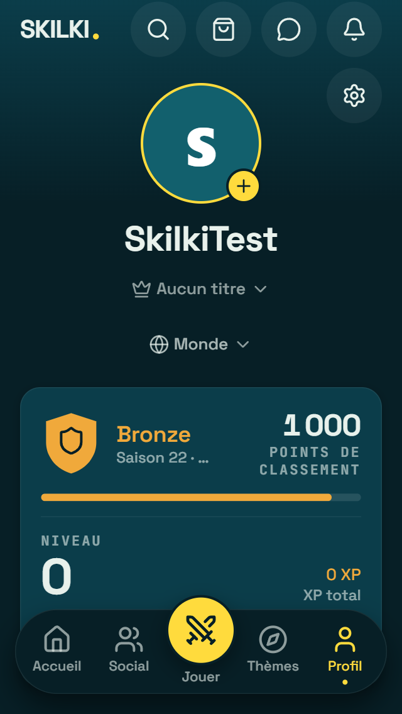
« Supprimer le compte » en rouge lisible (4,62:1 au lieu de 3,96:1).
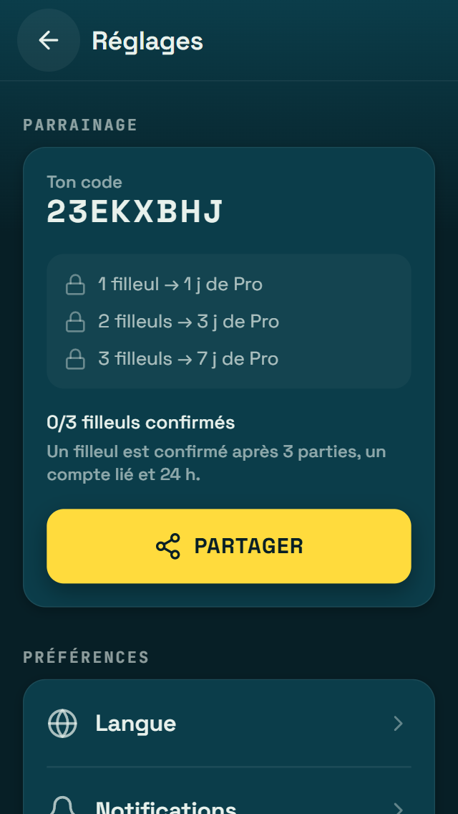
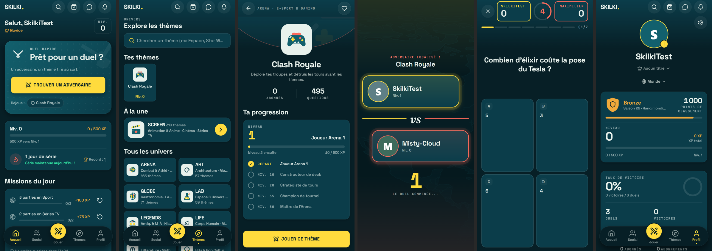
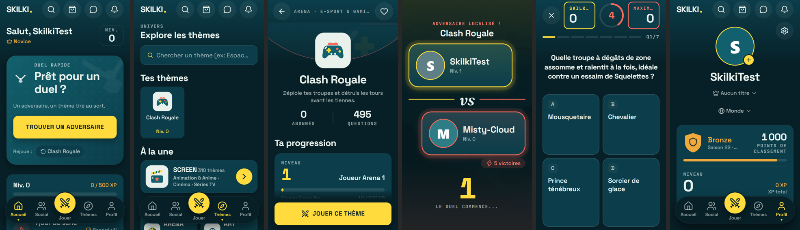